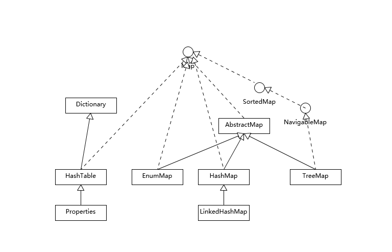
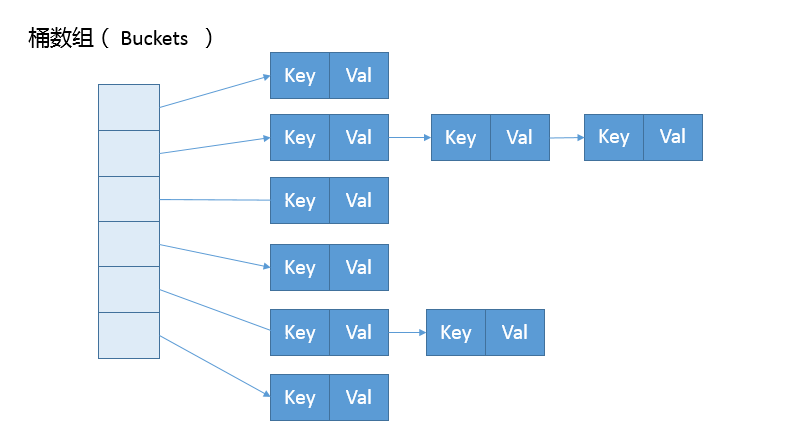

- 00 开篇词 以面试题为切入点，有效提升你的Java内功.md
- 01 谈谈你对Java平台的理解？.md
- 02 Exception和Error有什么区别？.md
- 03 谈谈final、finally、 finalize有什么不同？.md
- 04 强引用、软引用、弱引用、幻象引用有什么区别？.md
- 05 String、StringBuffer、StringBuilder有什么区别？.md
- 06 动态代理是基于什么原理？.md
- 07 int和Integer有什么区别？.md
- 08 对比Vector、ArrayList、LinkedList有何区别？.md
- 09 对比Hashtable、HashMap、TreeMap有什么不同？.md
- 10 如何保证集合是线程安全的_ ConcurrentHashMap如何实现高效地线程安全？.md
- 11 Java提供了哪些IO方式？ NIO如何实现多路复用？.md
- 12 Java有几种文件拷贝方式？哪一种最高效？.md
- 13 谈谈接口和抽象类有什么区别？.md
- 14 谈谈你知道的设计模式？.md
- 15 synchronized和ReentrantLock有什么区别呢？.md
- 16 synchronized底层如何实现？什么是锁的升级、降级？.md
- 17 一个线程两次调用start()方法会出现什么情况？.md
- 18 什么情况下Java程序会产生死锁？如何定位、修复？.md
- 19 Java并发包提供了哪些并发工具类？.md
- 20 并发包中的ConcurrentLinkedQueue和LinkedBlockingQueue有什么区别？.md
- 21 Java并发类库提供的线程池有哪几种？ 分别有什么特点？.md
- 22 AtomicInteger底层实现原理是什么？如何在自己的产品代码中应用CAS操作？.md
- 23 请介绍类加载过程，什么是双亲委派模型？.md
- 24 有哪些方法可以在运行时动态生成一个Java类？.md
- 25 谈谈JVM内存区域的划分，哪些区域可能发生OutOfMemoryError_.md
- 26 如何监控和诊断JVM堆内和堆外内存使用？.md
- 27 Java常见的垃圾收集器有哪些？.md
- 28 谈谈你的GC调优思路_.md
- 29 Java内存模型中的happen-before是什么？.md
- 30 Java程序运行在Docker等容器环境有哪些新问题？.md
- 31 你了解Java应用开发中的注入攻击吗？.md
- 32 如何写出安全的Java代码？.md
- 33 后台服务出现明显“变慢”，谈谈你的诊断思路？.md
- 34 有人说“Lambda能让Java程序慢30倍”，你怎么看？.md
- 35 JVM优化Java代码时都做了什么？.md
- 36 谈谈MySQL支持的事务隔离级别，以及悲观锁和乐观锁的原理和应用场景？.md
- 37 谈谈Spring Bean的生命周期和作用域？.md
- 38 对比Java标准NIO类库，你知道Netty是如何实现更高性能的吗？.md
- 39 谈谈常用的分布式ID的设计方案？Snowflake是否受冬令时切换影响？.md
- 周末福利 谈谈我对Java学习和面试的看法.md
- 结束语 技术没有终点.md
09 对比Hashtable、HashMap、TreeMap有什么不同？
Map是广义Java集合框架中的另外一部分，HashMap作为框架中使用频率最高的类型之一，它本身以及相关类型自然也是面试考察的热点。
今天我要问你的问题是，对比Hashtable、HashMap、TreeMap有什么不同？谈谈你对HashMap的掌握。
典型回答
Hashtable、HashMap、TreeMap都是最常见的一些Map实现，是以键值对的形式存储和操作数据的容器类型。
Hashtable是早期Java类库提供的一个哈希表实现，本身是同步的，不支持null键和值，由于同步导致的性能开销，所以已经很少被推荐使用。
HashMap是应用更加广泛的哈希表实现，行为上大致上与HashTable一致，主要区别在于HashMap不是同步的，支持null键和值等。通常情况下，HashMap进行put或者get操作，可以达到常数时间的性能，所以它是绝大部分利用键值对存取场景的首选，比如，实现一个用户ID和用户信息对应的运行时存储结构。
TreeMap则是基于红黑树的一种提供顺序访问的Map，和HashMap不同，它的get、put、remove之类操作都是O（log(n)）的时间复杂度，具体顺序可以由指定的Comparator来决定，或者根据键的自然顺序来判断。
考点分析
上面的回答，只是对一些基本特征的简单总结，针对Map相关可以扩展的问题很多，从各种数据结构、典型应用场景，到程序设计实现的技术考量，尤其是在Java 8里，HashMap本身发生了非常大的变化，这些都是经常考察的方面。
很多朋友向我反馈，面试官似乎钟爱考察HashMap的设计和实现细节，所以今天我会增加相应的源码解读，主要专注于下面几个方面：
-
理解Map相关类似整体结构，尤其是有序数据结构的一些要点。
-
从源码去分析HashMap的设计和实现要点，理解容量、负载因子等，为什么需要这些参数，如何影响Map的性能，实践中如何取舍等。
-
理解树化改造的相关原理和改进原因。
除了典型的代码分析，还有一些有意思的并发相关问题也经常会被提到，如HashMap在并发环境可能出现无限循环占用CPU、size不准确等诡异的问题。
我认为这是一种典型的使用错误，因为HashMap明确声明不是线程安全的数据结构，如果忽略这一点，简单用在多线程场景里，难免会出现问题。
理解导致这种错误的原因，也是深入理解并发程序运行的好办法。对于具体发生了什么，你可以参考这篇很久以前的分析，里面甚至提供了示意图，我就不再重复别人写好的内容了。
知识扩展
- Map整体结构
首先，我们先对Map相关类型有个整体了解，Map虽然通常被包括在Java集合框架里，但是其本身并不是狭义上的集合类型（Collection），具体你可以参考下面这个简单类图。

Hashtable比较特别，作为类似Vector、Stack的早期集合相关类型，它是扩展了Dictionary类的，类结构上与HashMap之类明显不同。
HashMap等其他Map实现则是都扩展了AbstractMap，里面包含了通用方法抽象。不同Map的用途，从类图结构就能体现出来，设计目的已经体现在不同接口上。
大部分使用Map的场景，通常就是放入、访问或者删除，而对顺序没有特别要求，HashMap在这种情况下基本是最好的选择。HashMap的性能表现非常依赖于哈希码的有效性，请务必掌握hashCode和equals的一些基本约定，比如：
-
equals相等，hashCode一定要相等。
-
重写了hashCode也要重写equals。
-
hashCode需要保持一致性，状态改变返回的哈希值仍然要一致。
-
equals的对称、反射、传递等特性。
这方面内容网上有很多资料，我就不在这里详细展开了。
针对有序Map的分析内容比较有限，我再补充一些，虽然LinkedHashMap和TreeMap都可以保证某种顺序，但二者还是非常不同的。
- LinkedHashMap通常提供的是遍历顺序符合插入顺序，它的实现是通过为条目（键值对）维护一个双向链表。注意，通过特定构造函数，我们可以创建反映访问顺序的实例，所谓的put、get、compute等，都算作“访问”。
这种行为适用于一些特定应用场景，例如，我们构建一个空间占用敏感的资源池，希望可以自动将最不常被访问的对象释放掉，这就可以利用LinkedHashMap提供的机制来实现，参考下面的示例：
import java.util.LinkedHashMap;
import java.util.Map;
public class LinkedHashMapSample {
public static void main(String[] args) {
LinkedHashMap<String, String> accessOrderedMap = new LinkedHashMap<String, String>(16, 0.75F, true){
@Override
protected boolean removeEldestEntry(Map.Entry<String, String> eldest) { // 实现自定义删除策略，否则行为就和普遍Map没有区别
return size() > 3;
}
};
accessOrderedMap.put("Project1", "Valhalla");
accessOrderedMap.put("Project2", "Panama");
accessOrderedMap.put("Project3", "Loom");
accessOrderedMap.forEach( (k,v) -> {
System.out.println(k +":" + v);
});
// 模拟访问
accessOrderedMap.get("Project2");
accessOrderedMap.get("Project2");
accessOrderedMap.get("Project3");
System.out.println("Iterate over should be not affected:");
accessOrderedMap.forEach( (k,v) -> {
System.out.println(k +":" + v);
});
// 触发删除
accessOrderedMap.put("Project4", "Mission Control");
System.out.println("Oldest entry should be removed:");
accessOrderedMap.forEach( (k,v) -> {// 遍历顺序不变
System.out.println(k +":" + v);
});
}
}
- 对于TreeMap，它的整体顺序是由键的顺序关系决定的，通过Comparator或Comparable（自然顺序）来决定。
我在上一讲留给你的思考题提到了，构建一个具有优先级的调度系统的问题，其本质就是个典型的优先队列场景，Java标准库提供了基于二叉堆实现的PriorityQueue，它们都是依赖于同一种排序机制，当然也包括TreeMap的马甲TreeSet。
类似hashCode和equals的约定，为了避免模棱两可的情况，自然顺序同样需要符合一个约定，就是compareTo的返回值需要和equals一致，否则就会出现模棱两可情况。
我们可以分析TreeMap的put方法实现：
public V put(K key, V value) {
Entry<K,V> t = …
cmp = k.compareTo(t.key);
if (cmp < 0)
t = t.left;
else if (cmp > 0)
t = t.right;
else
return t.setValue(value);
// ...
}
从代码里，你可以看出什么呢？ 当我不遵守约定时，两个不符合唯一性（equals）要求的对象被当作是同一个（因为，compareTo返回0），这会导致歧义的行为表现。
- HashMap源码分析
前面提到，HashMap设计与实现是个非常高频的面试题，所以我会在这进行相对详细的源码解读，主要围绕：
-
HashMap内部实现基本点分析。
-
容量（capacity）和负载系数（load factor）。
-
树化 。
首先，我们来一起看看HashMap内部的结构，它可以看作是数组（Node<K,V>[] table）和链表结合组成的复合结构，数组被分为一个个桶（bucket），通过哈希值决定了键值对在这个数组的寻址；哈希值相同的键值对，则以链表形式存储，你可以参考下面的示意图。这里需要注意的是，如果链表大小超过阈值（TREEIFY_THRESHOLD, 8），图中的链表就会被改造为树形结构。

从非拷贝构造函数的实现来看，这个表格（数组）似乎并没有在最初就初始化好，仅仅设置了一些初始值而已。
public HashMap(int initialCapacity, float loadFactor){
// ...
this.loadFactor = loadFactor;
this.threshold = tableSizeFor(initialCapacity);
}
所以，我们深刻怀疑，HashMap也许是按照lazy-load原则，在首次使用时被初始化（拷贝构造函数除外，我这里仅介绍最通用的场景）。既然如此，我们去看看put方法实现，似乎只有一个putVal的调用：
public V put(K key, V value) {
return putVal(hash(key), key, value, false, true);
}
看来主要的秘密似乎藏在putVal里面，到底有什么秘密呢？为了节省空间，我这里只截取了putVal比较关键的几部分。
final V putVal(int hash, K key, V value, boolean onlyIfAbent,
boolean evit) {
Node<K,V>[] tab; Node<K,V> p; int , i;
if ((tab = table) == null || (n = tab.length) = 0)
n = (tab = resize()).length;
if ((p = tab[i = (n - 1) & hash]) == ull)
tab[i] = newNode(hash, key, value, nll);
else {
// ...
if (binCount >= TREEIFY_THRESHOLD - 1) // -1 for first
treeifyBin(tab, hash);
// ...
}
}
从putVal方法最初的几行，我们就可以发现几个有意思的地方：
-
如果表格是null，resize方法会负责初始化它，这从tab = resize()可以看出。
-
resize方法兼顾两个职责，创建初始存储表格，或者在容量不满足需求的时候，进行扩容（resize）。
-
在放置新的键值对的过程中，如果发生下面条件，就会发生扩容。
if (++size > threshold)
resize();
- 具体键值对在哈希表中的位置（数组index）取决于下面的位运算：
i = (n - 1) & hash
仔细观察哈希值的源头，我们会发现，它并不是key本身的hashCode，而是来自于HashMap内部的另外一个hash方法。注意，为什么这里需要将高位数据移位到低位进行异或运算呢？这是因为有些数据计算出的哈希值差异主要在高位，而HashMap里的哈希寻址是忽略容量以上的高位的，那么这种处理就可以有效避免类似情况下的哈希碰撞。
static final int hash(Object kye) {
int h;
return (key == null) ? 0 : (h = key.hashCode()) ^ (h >>>16;
}
- 我前面提到的链表结构（这里叫bin），会在达到一定门限值时，发生树化，我稍后会分析为什么HashMap需要对bin进行处理。
可以看到，putVal方法本身逻辑非常集中，从初始化、扩容到树化，全部都和它有关，推荐你阅读源码的时候，可以参考上面的主要逻辑。
我进一步分析一下身兼多职的resize方法，很多朋友都反馈经常被面试官追问它的源码设计。
final Node<K,V>[] resize() {
// ...
else if ((newCap = oldCap << 1) < MAXIMUM_CAPACIY &&
oldCap >= DEFAULT_INITIAL_CAPAITY)
newThr = oldThr << 1; // double there
// ...
else if (oldThr > 0) // initial capacity was placed in threshold
newCap = oldThr;
else {
// zero initial threshold signifies using defaultsfults
newCap = DEFAULT_INITIAL_CAPAITY;
newThr = (int)(DEFAULT_LOAD_ATOR* DEFAULT_INITIAL_CAPACITY；
}
if (newThr ==0) {
float ft = (float)newCap * loadFator;
newThr = (newCap < MAXIMUM_CAPACITY && ft < (float)MAXIMUM_CAPACITY ?(int)ft : Integer.MAX_VALUE);
}
threshold = neThr;
Node<K,V>[] newTab = (Node<K,V>[])new Node[newap];
table = n；
// 移动到新的数组结构e数组结构
}
依据resize源码，不考虑极端情况（容量理论最大极限由MAXIMUM_CAPACITY指定，数值为 1<<30，也就是2的30次方），我们可以归纳为：
-
门限值等于（负载因子）x（容量），如果构建HashMap的时候没有指定它们，那么就是依据相应的默认常量值。
-
门限通常是以倍数进行调整 （newThr = oldThr << 1），我前面提到，根据putVal中的逻辑，当元素个数超过门限大小时，则调整Map大小。
-
扩容后，需要将老的数组中的元素重新放置到新的数组，这是扩容的一个主要开销来源。
- 容量、负载因子和树化
前面我们快速梳理了一下HashMap从创建到放入键值对的相关逻辑，现在思考一下，为什么我们需要在乎容量和负载因子呢？
这是因为容量和负载系数决定了可用的桶的数量，空桶太多会浪费空间，如果使用的太满则会严重影响操作的性能。极端情况下，假设只有一个桶，那么它就退化成了链表，完全不能提供所谓常数时间存的性能。
既然容量和负载因子这么重要，我们在实践中应该如何选择呢？
如果能够知道HashMap要存取的键值对数量，可以考虑预先设置合适的容量大小。具体数值我们可以根据扩容发生的条件来做简单预估，根据前面的代码分析，我们知道它需要符合计算条件：
负载因子 * 容量 > 元素数量
所以，预先设置的容量需要满足，大于“预估元素数量/负载因子”，同时它是2的幂数，结论已经非常清晰了。
而对于负载因子，我建议：
-
如果没有特别需求，不要轻易进行更改，因为JDK自身的默认负载因子是非常符合通用场景的需求的。
-
如果确实需要调整，建议不要设置超过0.75的数值，因为会显著增加冲突，降低HashMap的性能。
-
如果使用太小的负载因子，按照上面的公式，预设容量值也进行调整，否则可能会导致更加频繁的扩容，增加无谓的开销，本身访问性能也会受影响。
我们前面提到了树化改造，对应逻辑主要在putVal和treeifyBin中。
final void treeifyBin(Node<K,V>[] tab, int hash) {
int n, index; Node<K,V> e;
if (tab == null || (n = tab.length) < MIN_TREEIFY_CAPACITY)
resize();
else if ((e = tab[index = (n - 1) & hash]) != null) {
//树化改造逻辑
}
}
上面是精简过的treeifyBin示意，综合这两个方法，树化改造的逻辑就非常清晰了，可以理解为，当bin的数量大于TREEIFY_THRESHOLD时：
-
如果容量小于MIN_TREEIFY_CAPACITY，只会进行简单的扩容。
-
如果容量大于MIN_TREEIFY_CAPACITY ，则会进行树化改造。
那么，为什么HashMap要树化呢？
**本质上这是个安全问题。**因为在元素放置过程中，如果一个对象哈希冲突，都被放置到同一个桶里，则会形成一个链表，我们知道链表查询是线性的，会严重影响存取的性能。
而在现实世界，构造哈希冲突的数据并不是非常复杂的事情，恶意代码就可以利用这些数据大量与服务器端交互，导致服务器端CPU大量占用，这就构成了哈希碰撞拒绝服务攻击，国内一线互联网公司就发生过类似攻击事件。
今天我从Map相关的几种实现对比，对各种Map进行了分析，讲解了有序集合类型容易混淆的地方，并从源码级别分析了HashMap的基本结构，希望对你有所帮助。
一课一练
关于今天我们讨论的题目你做到心中有数了吗？留一道思考题给你，解决哈希冲突有哪些典型方法呢？
请你在留言区写写你对这个问题的思考，我会选出经过认真思考的留言，送给你一份学习鼓励金，欢迎你与我一起讨论。
你的朋友是不是也在准备面试呢？你可以“请朋友读”，把今天的题目分享给好友，或许你能帮到他。
© 2019 - 2023 Liangliang Lee. Powered by Vert.x and hexo-theme-book.